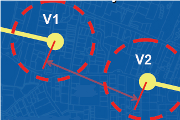

Vertices of geometries must not have identical coordinates. If the cluster tolerance was set to a value other than zero when the topology was built, then all points whose coordinates differ by less than the cluster tolerance are considered identical.
